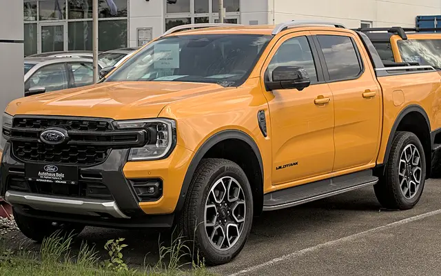

Par Motor › Precios por modelo › Ford Ranger
Precio de segunda mano · noviembre de 2026¿Cuánto vale un Ford Ranger de segunda mano?

Precio justo estimado de un Ford Ranger usado en España, año por año, con los kilómetros normales para su edad y en buen estado: de 17.300 € a 84.200 €. Para tasar el tuyo con sus kilómetros reales y su estado, usa el tasador gratis.
Precios del Ford Ranger por año
Ranger III (2012–2022)
Precio de nuevo: 2.2 TDCi 160 CV, 30.000 € · 3.2 TDCi 200 CV, 36.000 € · 2.0 EcoBlue 213 CV, 40.000 €
| Año | Km normales | 2.2 TDCi 160 CV · Diésel | 3.2 TDCi 200 CV · Diésel | 2.0 EcoBlue 213 CV · Diésel |
|---|---|---|---|---|
| 2022 | 90.000 km | 21.800 € | 26.100 € | 29.000 € |
| 2021 | 100.000 km | 20.500 € | 24.700 € | 27.400 € |
| 2020 | 100.000 km | 20.900 € | 25.100 € | 27.900 € |
| 2019 | 100.000 km | 21.200 € | 25.500 € | 28.300 € |
| 2018 | 100.000 km | 21.500 € | 25.800 € | 28.600 € |
| 2017 | 100.000 km | 21.600 € | 26.000 € | 28.800 € |
| 2016 | 100.000 km | 20.800 € | 25.000 € | 27.700 € |
| 2015 | 100.000 km | 19.900 € | 23.800 € | 26.500 € |
| 2014 | 100.000 km | 19.000 € | 22.800 € | 25.300 € |
| 2013 | 100.000 km | 18.100 € | 21.700 € | 24.200 € |
| 2012 | 100.000 km | 17.300 € | 20.800 € | 23.100 € |
Ranger IV (2023–hoy)
Precio de nuevo: 2.0 EcoBlue 170 CV, 40.000 € · Raptor 3.0 V6 EcoBoost 292 CV, 80.000 € · PHEV (enchufable) 281 CV, 55.000 €
| Año | Km normales | 2.0 EcoBlue 170 CV · Diésel | Raptor 3.0 V6 EcoBoost 292 CV · Gasolina | PHEV (enchufable) 281 CV · Híbrido enchufable |
|---|---|---|---|---|
| 2026 | 10.000 km | 40.500 € | 84.200 € | 52.100 € |
| 2025 | 30.000 km | 36.200 € | 75.400 € | 46.600 € |
| 2024 | 50.000 km | 34.600 € | 72.000 € | 44.500 € |
| 2023 | 70.000 km | 33.000 € | 68.700 € | 42.500 € |
Kilómetros normales: 15.000 al año en gasolina, híbridos y eléctricos, y 20.000 en diésel, con un máximo de 100.000 km (por encima no tasamos: el precio depende demasiado del historial de cada coche). Cifras redondeadas a 100 €.
Preguntas frecuentes
¿Cuánto vale un Ford Ranger de segunda mano?
Según el año, la versión y los kilómetros, un Ford Ranger usado vale hoy de 17.300 € a 84.200 € en España. El más barato de nuestra tabla es un 2.2 TDCi de 2012 (17.300 €) y el más caro un Raptor 3.0 V6 EcoBoost de 2026 (84.200 €). Son precios justos estimados entre particulares y profesionales, con los kilómetros normales para su edad y en buen estado.
¿Qué motorizaciones tiene el Ford Ranger?
En nuestra base de datos hay versiones diésel, gasolina y híbrido enchufable, en 2 generaciónes: Ranger III y Ranger IV.
¿Cómo sé si me piden demasiado por un Ford Ranger?
Abre el tasador de Par Motor, elige el Ford Ranger, el año y los kilómetros reales, y escribe lo que te piden. Te diremos si está por debajo del precio justo (chollo) o por encima (caro). Es gratis y no pide registro ni matrícula.
Otros Ford
- B-Max
- C-Max
- Capri
- EcoSport
- Explorer EV
- Fiesta
- Focus
- Ka y Ka+
- Kuga
- Mondeo
- Mustang
- Mustang Mach-E
- Puma
- S-Max y Galaxy
- Tourneo Connect y Courier
Compara su coste real
El precio de compra es solo una parte. Mira cuánto te costaría al mes con combustible, seguro, neumáticos, mantenimiento y lo que pierde de valor.
Abrir el comparador →